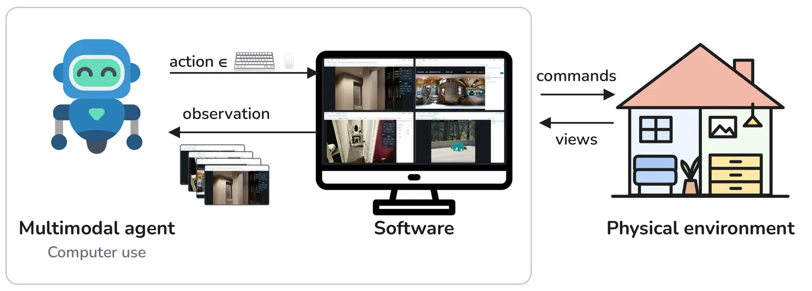
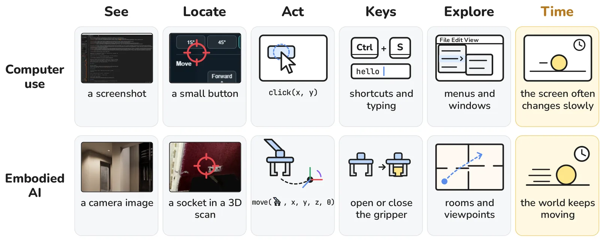
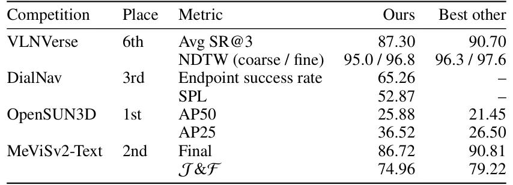

A Hipótese da Interface Única
A inteligência artificial tem passado por uma mudança de paradigma: modelos de propósito geral estão substituindo métodos artesanais e arquiteturas especializadas em diversas áreas. Desde a tradução automática até a geração de código, a tendência é clara. Os autores deste paper, Pranjal Aggarwal e Sean Welleck, da Carnegie Mellon University, argumentam que a IA encarnada (embodied AI) — o campo que estuda agentes que percebem e agem em ambientes físicos — está prestes a sofrer a mesma transformação.
A proposta central é audaciosa: tarefas de IA encarnada podem ser formuladas como interação com software digital. Em vez de construir robôs especializados ou treinar modelos específicos para cada tipo de robótica, eles propõem usar Agentes de Uso de Computador (Computer-Use Agents, CUAs). Esses são agentes de IA generalistas que operam softwares diversos através de screenshots, cliques de mouse e entradas de teclado.
A premissa é que operar um computador e agir em um ambiente físico compartilham desafios fundamentais. Ambos exigem percepção visual (visual grounding), exploração do espaço e adaptação das ações com base no feedback do ambiente. Se conseguirmos renderizar a visão de um ambiente físico em uma tela e fornecer controles digitais para agir nele, um CUA pode executar tarefas físicas usando a mesma interface que usa para abrir planilhas ou navegar na web.

O Método: Software como Ponte
Para testar essa hipótese, os autores desenvolveram uma abordagem onde a funcionalidade específica da tarefa reside no software, não no design do agente. Eles construíram quatro aplicações de software distintas, cada uma simulando um ambiente físico diferente e fornecendo controles para interagir com ele. Em seguida, usaram um único design de agente CUA minimalista para operar todas essas aplicações.
O agente não é ajustado para cada competição ou tarefa. Ele recebe a descrição da tarefa, as instruções do software e quaisquer imagens de referência. A cada passo, o software apresenta uma observação visual (um screenshot ou vídeo) e o histórico de interação. O agente, baseado em um modelo de linguagem multimodal, decide uma ação de teclado ou mouse. O software executa essa ação, atualiza o estado do ambiente e retorna a nova observação.
Esse ciclo se repete até que o agente pressione o botão de envio na interface. O software então exporta a trajetória ou a previsão. A chave aqui é que o agente só precisa aprender a usar a interface gráfica (GUI). Ele não precisa conhecer a física subjacente, a geometria 3D complexa ou a lógica interna do simulador. Ele apenas precisa mapear o que vê na tela para as ações corretas de mouse e teclado.
As Quatro Aplicações e Competições
Os autores entraram com essa abordagem em quatro competições de workshops do ECCV 2026, cobrindo tarefas variadas de IA encarnada. A primeira foi o VLNVerse, que exige navegação em uma cena 3D baseada em instruções de linguagem. Eles construíram um visualizador de cena 3D com controles de tradução e rotação. O agente usa atalhos de teclado ou botões na tela para mover-se e olhar ao redor, identificando marcos para chegar ao destino.
A segunda foi o DialNav, navegação guiada por diálogo. Aqui, o software exibe um panorama de 360 graus com saídas numeradas. O agente digita perguntas para um 'Guia' (um modelo interno do software) e clica nas saídas para se mover. O guia infere a localização do agente e dá direções em linguagem natural. O agente deve interpretar essas direções e a visão panorâmica para tomar decisões.
A terceira competição foi o OpenSUN3D, focado em segmentação 3D guiada por linguagem. O desafio é descrever uma ação (como 'abrir a gaveta') e gerar uma máscara 3D da região de interação. O software permite que o agente explore a varredura 3D e clique nas partes exatas dos objetos. O agente precisa localizar o alvo com precisão, similar a clicar em um botão pequeno em uma interface gráfica.
A quarta foi o MeViSv2, que envolve segmentação de vídeo referenciada. O agente deve selecionar objetos em um vídeo e revisar os rastros. O software fornece controles para segmentação e propagação de máscaras. Em todos os casos, o mesmo agente, implementado com as mesmas versões do Gemini Flash e o mesmo prompt de sistema, operou as diferentes interfaces.

Análise dos Resultados
Os resultados nas competições foram robustos. No OpenSUN3D, o agente venceu com uma margem significativa, superando a melhor entrada em pontos de precisão média (AP50 e AP25). A capacidade de explorar uma varredura 3D e clicar na parte exata de um objeto, como uma alça de gaveta, foi crucial. No MeViSv2-Text, ficou em segundo lugar, destacando-se na precisão de identificar quando nenhum objeto correspondia à descrição (88,89% de precisão contra 83,33% do melhor concorrente).
No DialNav, o terceiro lugar foi alcançado com uma taxa de sucesso no ponto final de 65,26%. A navegação guiada por diálogo exigiu que o agente interpretasse texto e coordenasse ações de clique com as direções do guia. No VLNVerse, embora tenha ficado em sexto lugar na métrica de sucesso (SR@3), o agente seguiu as rotas de referência mais de perto do que a maioria das 74 entradas, com a terceira melhor pontuação em NDTW (Normalized Dynamic Time Warping).
Esses resultados sugerem que os CUAs já possuem habilidades transferíveis. O grounding visual (localizar onde clicar), a exploração sistemática e a precisão motora (coordenação olho-mão digital) são fundamentais tanto para usar um software complexo quanto para navegar em um ambiente físico simulado. O modelo não foi treinado especificamente para robótica; ele aprendeu a usar interfaces.

GUI vs. APIs de Texto
Uma questão natural surge: por que usar uma interface gráfica (GUI) se podemos fornecer APIs de texto diretas para navegação e segmentação? Os autores investigaram isso comparando a interação via GUI contra a interação via API de texto em um subconjunto das tarefas. A hipótese era que agentes suficientemente capazes poderiam alcançar o mesmo desempenho com ambas as interfaces.
Os resultados mostraram que as duas interfaces tiveram desempenho dentro de quatro pontos uma da outra. Em algumas competições, a GUI obteve pontuações ligeiramente superiores. Isso indica que, para modelos modernos, a barreira de usar uma GUI não é mais insuperável. A lacuna entre interações apenas via GUI e assistidas por APIs está se fechando, e agentes fortes podem performar comparavelmente ou melhor via GUI.
Isso tem implicações profundas. Se um agente pode operar via GUI, ele pode interagir com qualquer software existente sem necessidade de desenvolvimento de APIs dedicadas. Isso democratiza o acesso a ferramentas complexas e reduz a necessidade de especialização por tarefa. O agente se torna um generalista que pode aprender a usar novas ferramentas apenas vendo a interface.
O Caminho para a IA Encarnada Geral
Os autores traçam um paralelo entre o estado atual da IA encarnada e o estado dos agentes de uso de computador há dois anos. Na época, agentes de computador tinham dificuldades com clique preciso e dependiam de sobreposições ou modelos de grounding separados. Eles ficavam atrás de agentes com APIs específicas. Hoje, modelos como Gemini e Claude operam computadores escrevendo coordenadas de clique como texto comum, alcançando desempenho comparável ao uso de APIs.
Essa evolução foi impulsionada por treinamento para grounding visual preciso, ambientes de reforço para aprendizado e otimização de velocidade para uso em tempo real. Os autores argumentam que a IA encarnada deve seguir o mesmo roteiro. Simuladores podem gerar dados de grounding em escala, e ambientes de simulação podem ser usados para treinamento.
A proposta é que a IA encarnada converja para um único modelo geral, assim como os agentes de computador. Em vez de modelos especializados para cada robô ou tarefa, teríamos um modelo que aprende a interagir com o mundo físico através de interfaces de software. Isso reduziria a fragmentação do campo e aceleraria o progresso.
Limitações e Considerações
Apesar dos resultados promissores, o paper reconhece limitações. A principal diferença entre o uso de software e o mundo físico é o tempo. A tela muda lentamente, enquanto o mundo físico é contínuo e dinâmico. Agentes baseados em GUI operam em ciclos discretos de screenshot-ação, o que pode ser mais lento ou menos adequado para tarefas que exigem controle de alta frequência no mundo real.
Além disso, o estudo foca em competições de workshops, que são ambientes controlados. A generalização para cenários do mundo real, com ruído, variações de iluminação e imprevistos, ainda precisa ser demonstrada em larga escala. O uso de simuladores como ponte é promissor, mas a transferência de simulação para realidade (sim-to-real) permanece um desafio aberto na robótica.
Outro ponto é a eficiência. Embora o desempenho seja competitivo, a interação via GUI pode ser menos eficiente do que APIs diretas em termos de latência e robustez. Erros de OCR ou falhas no reconhecimento de elementos da interface podem levar a falhas em cadeia. No entanto, a vantagem da generalização e da facilidade de integração com novos softwares pode compensar essas desvantagens em muitos casos.
Conclusão
Este paper oferece evidências sólidas de que agentes de uso de computador podem atuar como generalistas em tarefas de IA encarnada. Ao formular ambientes físicos como softwares interativos, os autores demonstraram que um único agente pode vencer competições diversas sem ajustes específicos. Isso sugere que as habilidades de percepção e ação aprendidas em interfaces digitais são transferíveis para o mundo físico.
A mensagem central é que a IA encarnada pode seguir o caminho dos agentes de computador: convergir para um modelo geral que opera através de interfaces. Isso não significa substituir robôs físicos, mas sim fornecer uma camada de inteligência generalista que pode controlar qualquer sistema, desde um navegador web até um braço robótico, desde que haja uma interface de software.
Para desenvolvedores e cientistas de dados, a implicação é clara: investir em modelos de uso de computador robustos pode ser uma estratégia válida para abordar problemas de robótica e automação física. A especialização excessiva em arquiteturas de robótica pode estar se tornando menos necessária, à medida que a generalização dos modelos de linguagem multimodal avança.
Takeaways
Agentes de uso de computador podem realizar tarefas de IA encarnada sem tuning específico, tratando ambientes físicos como interfaces de software.
Habilidades como grounding visual e clique preciso transferem-se do digital para o físico, permitindo generalização em múltiplas tarefas.
A performance via GUI é competitiva com APIs de texto, sugerindo que agentes gerais podem operar qualquer software ou simulador.
A IA encarnada pode seguir o caminho dos agentes de computador, convergindo para um único modelo generalista em vez de arquiteturas especializadas.
O que fica
- Agentes de uso de computador podem realizar tarefas de IA encarnada sem tuning específico, tratando ambientes físicos como interfaces de software.
- Habilidades como grounding visual e clique preciso transferem-se do digital para o físico, permitindo generalização em múltiplas tarefas.
- A performance via GUI é competitiva com APIs de texto, sugerindo que agentes gerais podem operar qualquer software ou simulador.
- A IA encarnada pode seguir o caminho dos agentes de computador, convergindo para um único modelo generalista em vez de arquiteturas especializadas.
Paper original: Computer-Use Agents Are Embodied Generalists
Comentários
Nenhum comentário ainda. Seja o primeiro.